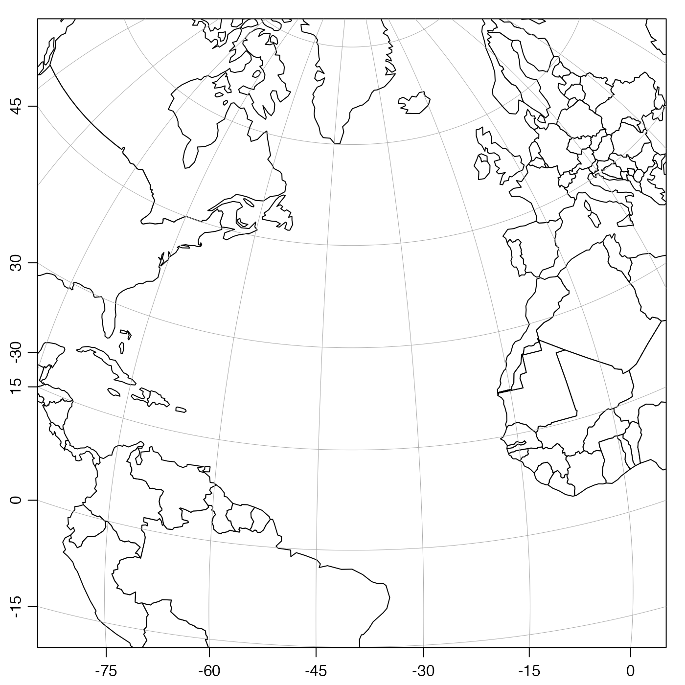
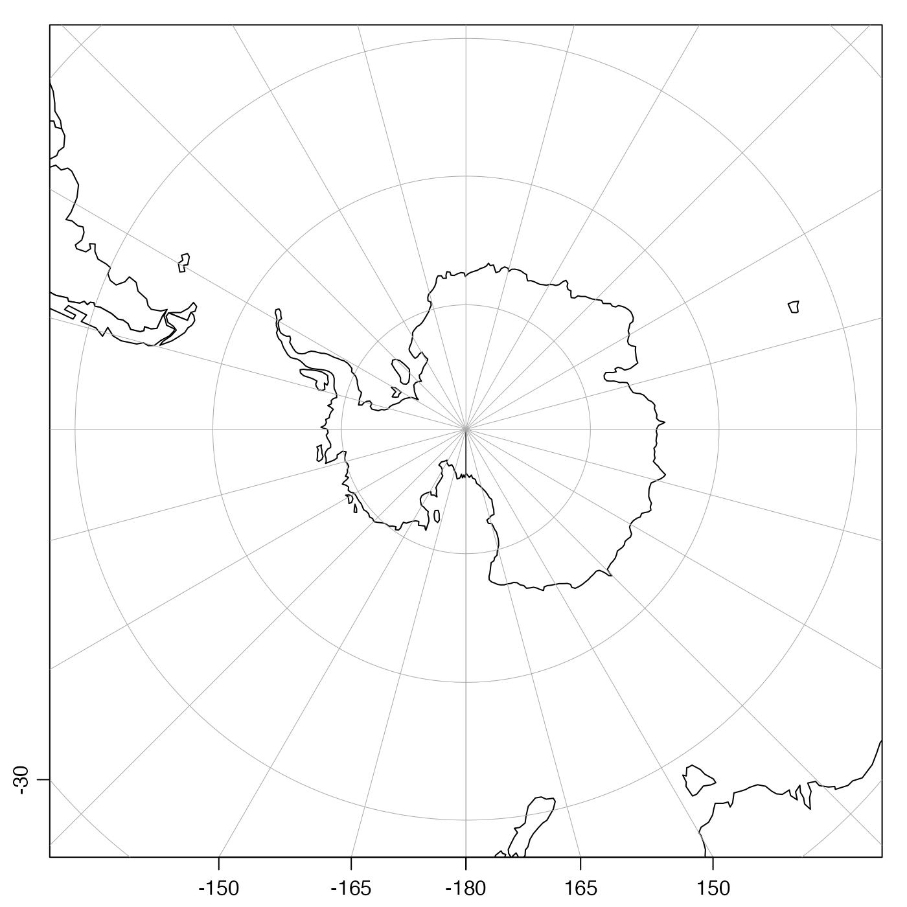

Create a coordinate reference string (CRS), suitable for use as a
projection argument to mapPlot() or
plot,coastline-method().
oceCRS(region)character string indicating the region. This must be
in the following list (or a string that matches to just one entry,
with pmatch()):
"North Atlantic", "South Atlantic", "Atlantic",
"North Pacific", "South Pacific", "Pacific",
"Arctic", and "Antarctic".
string contain a CRS, which can be used as projectionin mapPlot().
This is a preliminary version of this function, with the results being very likely to change through the autumn of 2016, guided by real-world usage.
Other functions related to maps:
formatPosition(),
lonlat2map(),
lonlat2utm(),
map2lonlat(),
mapArrows(),
mapAxis(),
mapContour(),
mapCoordinateSystem(),
mapDirectionField(),
mapGrid(),
mapImage(),
mapLines(),
mapLocator(),
mapLongitudeLatitudeXY(),
mapPlot(),
mapPoints(),
mapPolygon(),
mapScalebar(),
mapText(),
mapTissot(),
shiftLongitude(),
usrLonLat(),
utm2lonlat()
# \donttest{
library(oce)
data(coastlineWorld)
par(mar=c(2, 2, 1, 1))
plot(coastlineWorld, projection=oceCRS("Atlantic"), span=12000)
plot(coastlineWorld, projection=oceCRS("North Atlantic"), span=8000)

plot(coastlineWorld, projection=oceCRS("South Atlantic"), span=8000)
plot(coastlineWorld, projection=oceCRS("Arctic"), span=4000)
plot(coastlineWorld, projection=oceCRS("Antarctic"), span=10000)

# Avoid ugly horizontal lines, an artifact of longitude shifting.
# Note: we cannot fill the land once we shift, either.
pacific <- coastlineCut(coastlineWorld, -180)
plot(pacific, proj=oceCRS("Pacific"), span=15000, col=NULL)
plot(pacific, proj=oceCRS("North Pacific"), span=12000, col=NULL)
plot(pacific, proj=oceCRS("South Pacific"), span=12000, col=NULL)
# }